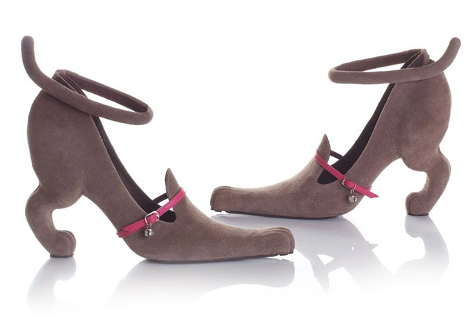

Clothes For Sale
#1: Doggie Shoes
This is a pair of shoes made out of real dog skin. The fabric is soft and does not smell. The heel is 5 inches high and is imported directly from China.
- Chihuahua skin
- A collar bell that jingles when you walk
- water-proof
- $500
#2: Striped Socks
This paur of socks is made out of real cotton, so they are soft to the touch. They are imported directly from Canada. This pair is the limited edition, there are only 224 pairs left around the world.
- Extremely stretchy
- Only 2 millimeters thick
- Glow-in-the-dark socks
- $50
#3: Santa's Hat
This is a Santa Hat used in typical Chirstmas Holidays. The fabric is hard and crisp on the outside so it remains in its shape but soft and flexible on the inside so that it would support your head. It is imported from America.
- Made out of animal fur
- UV Protection
- Color changes according to the temperature
- $200
#4: Dress
This dress is made out of silk and is veyr soft to the touch. Little crystal beads are embedded within the belt of the dress and they shine when exposed to light. It is imported from Korea.
- It can stretch and shrink
- Very soft
- Buy one get one free
- $1200
#5: Sweater
This gray sweater is very stylish and think. The finest cotton woven into elaborate patterns. The button is made out of red wood. Imported from Japan.
- Very silky
- Hides your fat
- Elaborate patterns
- $250